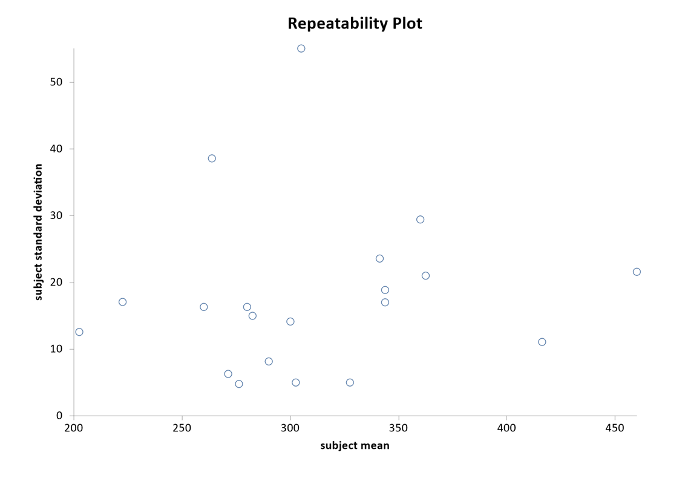
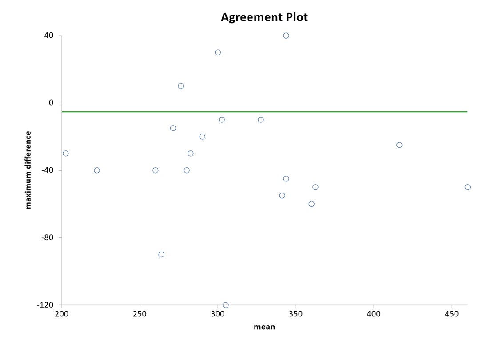
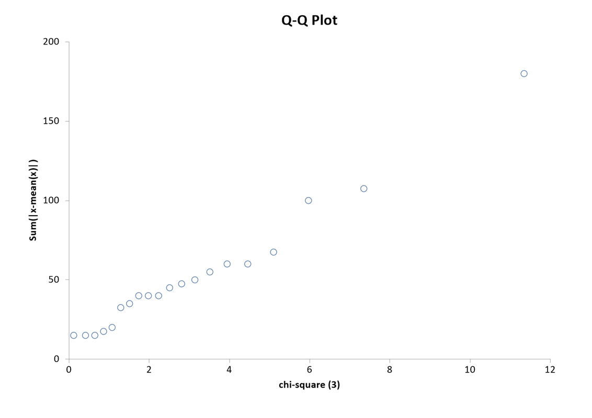

Agreement of Continuous Measurements
Menu location: Analysis_Agreement_Continuous (Intra-class).
The function calculates one way random effects intra-class correlation coefficient, estimated within-subjects standard deviation and a repeatability coefficient (Bland and Altman 1996a and 1996b, Shrout and Fleiss 1979, McGraw and Wong 1996).
Intra-class correlation coefficient is calculated as:
$ \displaystyle r_I=\frac{MS_B-MS_W}{MS_B+(m-1) MS_W}$
- where m is the number of observations per subject, MSB is the between-subjects mean square and MSW is the within-subjects (residual) mean square from one way ANOVA. This is the one way random effects coefficient ICC(1) of Shrout and Fleiss (1979) and McGraw and Wong (1996). Its confidence interval is calculated from the exact distribution of F = MSB/MSW with n − 1 and n(m − 1) degrees of freedom, where n is the number of subjects:
$ \displaystyle \frac{F/F_U-1}{F/F_U+m-1} \le r_I \le \frac{F/F_L-1}{F/F_L+m-1}$
- where FU and FL are the upper and lower α/2 quantiles of the F distribution with n − 1 and n(m − 1) degrees of freedom, for a 100(1 − α)% confidence interval.
Within-subjects standard deviation is estimated as the square root of the residual mean square from one way ANOVA.
The repeatability coefficient is calculated as:
$ \displaystyle C_r=\sqrt{2} \space z \space \zeta_w$
- where z is a quantile from the standard normal distribution (usually taken as the 5% two tailed quantile of 1.96) and ζw is the estimated within-subjects standard deviation (calculated as above).
Intra-subject standard deviation is plotted against intra-subject means and Kendall's rank correlation is used to assess the interdependence of these two variables.
An agreement plot is constructed by plotting the maximum differences from each possible intra-subject contrast against intra-subject means and the overall mean is marked as a line on this plot.
A Q-Q plot is given; here the sum of the difference between intra-subject observations and their means are ordered and plotted against an equal order of chi-square quantiles.
Agreement analysis is best carried out under expert statistical guidance.
Example
From Bland and Altman (1996a).
Test workbook (Agreement worksheet: 1st, 2nd, 3rd, 4th).
Four peak flow measurements were repeated for twenty children:
| 1st | 2nd | 3rd | 4th |
| 190 | 220 | 200 | 200 |
| 220 | 200 | 240 | 230 |
| 260 | 260 | 240 | 280 |
| 210 | 300 | 280 | 265 |
| 270 | 265 | 280 | 270 |
| 280 | 280 | 270 | 275 |
| 260 | 280 | 280 | 300 |
| 275 | 275 | 275 | 305 |
| 280 | 290 | 300 | 290 |
| 320 | 290 | 300 | 290 |
| 300 | 300 | 310 | 300 |
| 270 | 250 | 330 | 370 |
| 320 | 330 | 330 | 330 |
| 335 | 320 | 335 | 375 |
| 350 | 320 | 340 | 365 |
| 360 | 320 | 350 | 345 |
| 330 | 340 | 380 | 390 |
| 335 | 385 | 360 | 370 |
| 400 | 420 | 425 | 420 |
| 430 | 460 | 480 | 470 |
To analyse these data using StatsDirect you must first enter them into a workbook or open the test workbook. Then select Continuous from the Agreement section of the Analysis menu.
Agreement
Variables: 1st, 2nd, 3rd, 4th
Intra-class correlation coefficient (one way random effects) = 0.887666 (95% CI = 0.795982 to 0.948056; F = MSB/MSW on 19 and 60 df)
Estimated within-subjects standard deviation = 21.459749
For within-subjects sd vs. mean, Kendall's tau b = 0.164457 two sided P = 0.3296
Repeatability (for alpha = 0.05) = 59.482297
Note that Bland and Altman (1996a) quote an intra-class correlation of 0.88 for these data, from Fisher's symmetrical-table form of the coefficient; the one way random effects (ANOVA) estimator above gives 0.89.



 R code
R code
This R code reproduces the example above. It needs no packages and was checked with R 4.6.1. Paste it into R, or save it as a script and run it.
# Agreement of continuous measurements: the StatsDirect help example (Bland and Altman
# 1996a, four peak flow readings on each of 20 children; the test workbook's Agreement
# worksheet columns 1st to 4th) in R
first <- c(190, 220, 260, 210, 270, 280, 260, 275, 280, 320, 300, 270, 320, 335, 350,
360, 330, 335, 400, 430)
second <- c(220, 200, 260, 300, 265, 280, 280, 275, 290, 290, 300, 250, 330, 320, 320,
320, 340, 385, 420, 460)
third <- c(200, 240, 240, 280, 280, 270, 280, 275, 300, 300, 310, 330, 330, 335, 340,
350, 380, 360, 425, 480)
fourth <- c(200, 230, 280, 265, 270, 275, 300, 305, 290, 290, 300, 370, 330, 375, 365,
345, 390, 370, 420, 470)
flow <- cbind(first, second, third, fourth)
n <- nrow(flow)
m <- ncol(flow)
# R's standard one way analysis of variance of the readings by child: its between
# children and residual (within children) mean squares give the one way random
# effects intra-class correlation and the within-subjects standard deviation
long <- data.frame(reading = as.vector(flow), child = factor(rep(1:n, m)))
a <- anova(lm(reading ~ child, data = long))
print(a)
# The report's lines to 6 places. The interval for the coefficient comes from the F
# distribution of MSB/MSW on n - 1 and n(m - 1) degrees of freedom
six <- function(x) formatC(x, digits = 6, format = "f", drop0trailing = TRUE)
pv <- function(p) {
if (p < 0.0001) "P < 0.0001" else
paste("P =", formatC(p, digits = 4, format = "f", drop0trailing = TRUE))
}
msb <- a["child", "Mean Sq"]
msw <- a["Residuals", "Mean Sq"]
icc <- (msb - msw) / (msb + (m - 1) * msw)
f <- msb / msw
fu <- qf(0.975, n - 1, n * (m - 1))
fl <- qf(0.025, n - 1, n * (m - 1))
cat("Intra-class correlation coefficient (one way random effects) =", six(icc),
"(95% CI =", six((f / fu - 1) / (f / fu + m - 1)), "to",
six((f / fl - 1) / (f / fl + m - 1)), ")\n")
sw <- sqrt(msw)
cat("Estimated within-subjects standard deviation =", six(sw), "\n")
# Each child's standard deviation against the child's mean: Kendall's tau b, with the
# continuity corrected normal approximation to its P value (the ties rule out the
# exact test)
child_sd <- apply(flow, 1, sd)
child_mean <- rowMeans(flow)
kt <- cor.test(child_sd, child_mean, method = "kendall", exact = FALSE,
continuity = TRUE)
cat("For within-subjects sd vs. mean, Kendall's tau b =", six(kt$estimate),
" two sided", pv(kt$p.value), "\n")
# The repeatability coefficient: for 95% of pairs of readings on the same child, the
# two readings differ by less than root 2 times 1.96 times the within-subjects
# standard deviation
cat("Repeatability (for alpha = 0.05) =", six(sqrt(2) * qnorm(0.975) * sw), "\n")
# The report's three plots: each child's standard deviation, then the largest
# difference between two of the child's readings, against the child's mean; and the
# ordered sums of the absolute deviations of each child's readings from their mean
# against chi-square quantiles on m - 1 degrees of freedom
largest <- apply(flow, 1, function(r) {
d <- outer(r, r, "-")[upper.tri(diag(m))]
d[which.max(abs(d))]
})
par(mfrow = c(1, 3))
plot(child_mean, child_sd, xlab = "subject mean", ylab = "subject standard deviation",
main = "Repeatability Plot")
plot(child_mean, largest, xlab = "subject mean", ylab = "largest difference",
main = "Agreement Plot")
abline(h = mean(largest), lty = 2)
plot(qchisq(seq(0.01, 0.99, length.out = n), m - 1),
sort(rowSums(abs(flow - child_mean))), xlab = paste0("chi-square (", m - 1, ")"),
ylab = "Sum(|x-mean(x)|)", main = "Q-Q Plot")